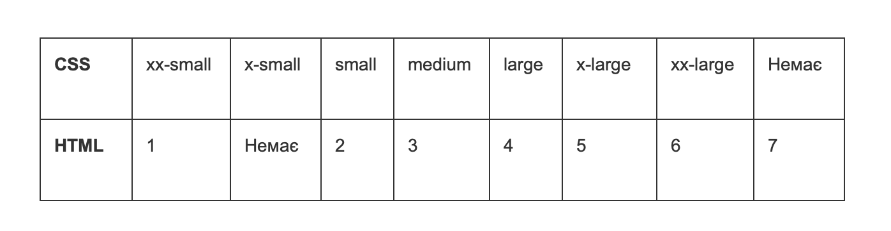
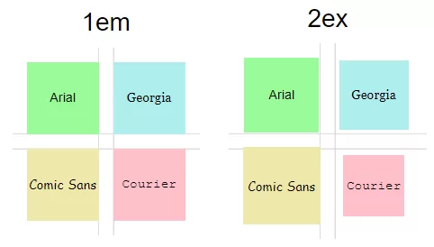

Одиниці вимірювання в HTML та CSS використовуються для визначення розмірів тексту, зображень та інших елементів вебсторінки. Від правильного вибору одиниці залежить читабельність матеріалу та загальний вигляд сторінки.
Під час створення вебсайту розробник повинен розуміти, як саме працюють різні типи одиниць вимірювання та у яких випадках їх доцільно застосовувати.
Абсолютні одиниці мають фіксоване значення і не залежать від інших елементів сторінки. Найпоширенішою одиницею є піксель (px). Він задає точний розмір елемента на екрані.
Іншими прикладами абсолютних одиниць є сантиметри (cm), міліметри (mm) та пункти (pt). Однак у сучасній веброзробці вони використовуються рідше.
Абсолютні одиниці забезпечують точність, але не завжди гарантують адаптивність.
Відносні одиниці змінюються залежно від розміру шрифту або параметрів вікна браузера. Наприклад, одиниця em залежить від розміру шрифту батьківського елемента, а rem — від розміру шрифту кореневого елемента сторінки.
Також часто використовуються відсотки (%), які дозволяють задавати ширину або розмір тексту відносно іншого елемента. Одиниці vw та vh визначають розміри залежно від ширини та висоти вікна браузера.
Вибір правильної одиниці дозволяє зробити сторінку більш зручною для читання та адаптивною до різних пристроїв.
Більш детальну інформацію можна знайти на офіційному ресурсі W3C або в довіднику з CSS. Для прикладу можна скористатися енциклопедією Вікіпедія.

